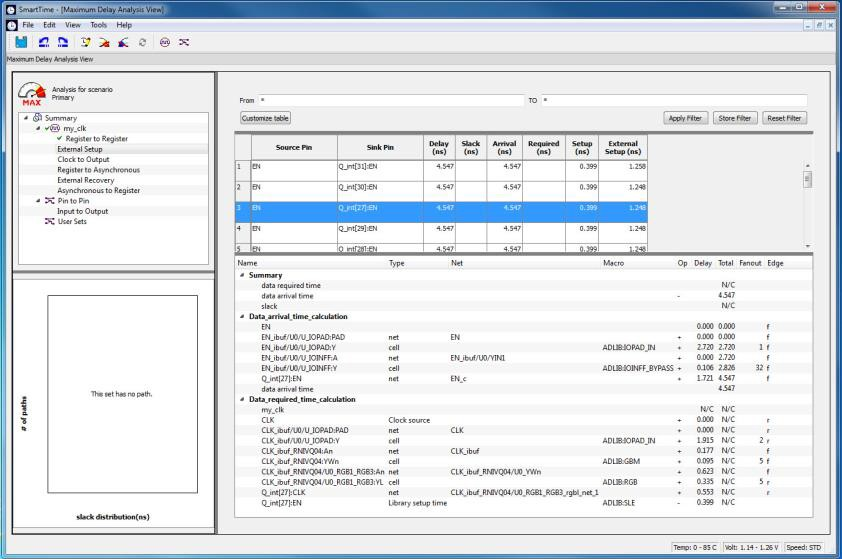
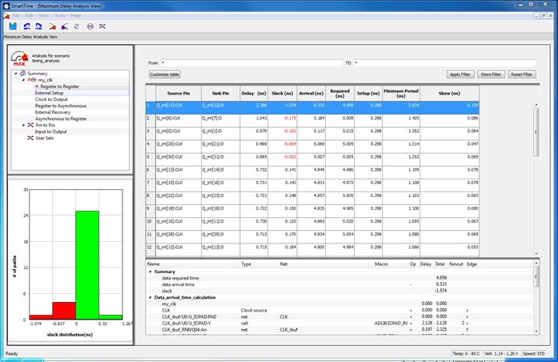
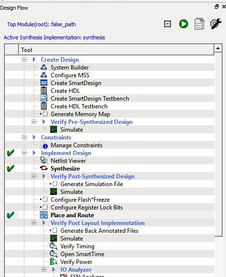
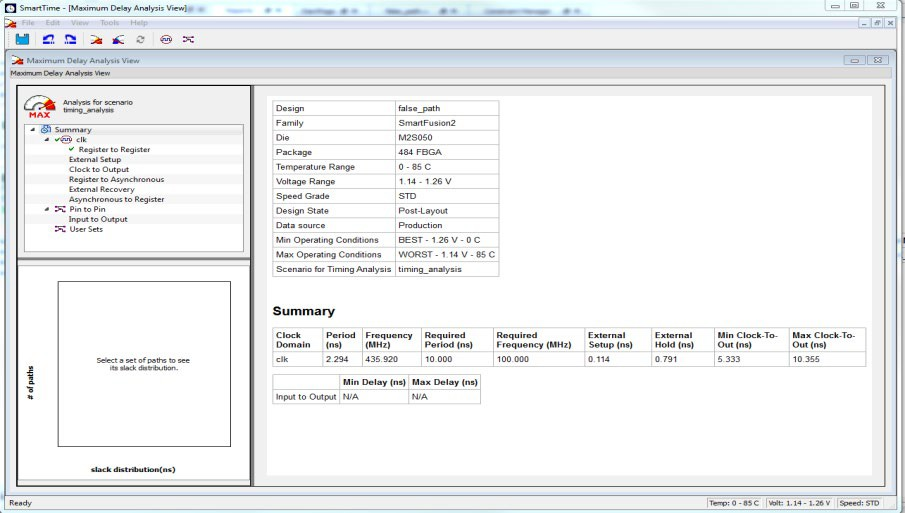
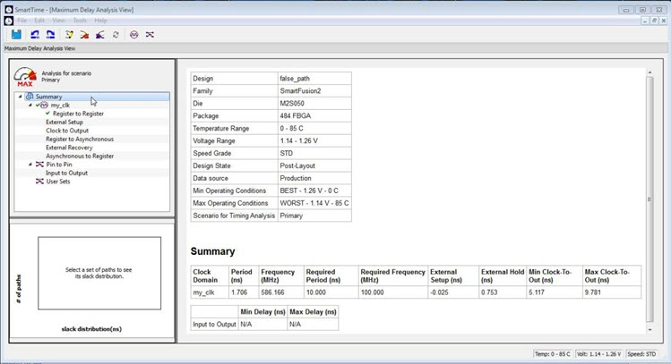

11.10 SmartTime Tutorials
(Ask a Question)The following sections describe SmartTime tutorials.
11.10.1 Tutorial 1—32-Bit Shift Register with Clock Enable
(Ask a Question)This tutorial describes how to enter a clock constraint for the 32-bit shift register on SmartFusion 2 device.
To set up your project:
- Invoke Libero SoC. From the Project menu, choose New Project.
- Type sf2_shift32 for your new project name and browse to a folder for your project location.
- Select Verilog as the Preferred HDL Type.
-
Leave all other settings at their default values.
Figure 11-55. New Project Creation - 32 Bit Shift Register -
Click Next to go to Device Selection page. Make the
following selection from the pull-down menus:
- Family: SmartFusion 2
- Die: M2S090TS
- Package: 484 FBGA
- Speed: STD
- Core Voltage: 1.2V
- Range: COM
Figure 11-56. Selections from Pull-down Menus - Click the M2S090TS-1FG484 part number and click .
- Accept the default settings in the Device Settings page and click Next.
- Accept the default settings in the Design Template page and click Next.
- Click Next to go to the Add Constraints page.
- Because you are not adding any constraints, click Finish to exit the New Project Creation wizard.
-
To add a new HDL file, select File> New> HDL.
The Create a new HDL file dialog box appears.
-
Name the HDL file shift_reg32 as shown below and click
OK.
Figure 11-57. Create a New HDL File Dialog Box -
Copy the following code and paste it into the Verilog file:
module shift32 ( Q,CLK,D,EN,RESET); input D,EN,CLK,RESET;
output[31:0] Q; reg [31:0] Q_int;
assign Q=Q_int;
always@ (posedge CLK) begin
if(RESET)
Q_int<=0; else begin if(EN)
Q_int<={Q_int[30:0],D}; end
end endmodule
- Check the HDL file to confirm there are no syntax errors.
-
Confirm that the shift_reg32 design appears in the Design Hierarchy window, as
shown in the following figure.
Figure 11-58. shift_reg32 in the Design Hierarchy Window -
In the Design Flow window, double-click Synthesize to
run Synplify Pro with default settings.
A green check mark appears next to Synthesize when Synthesis is successful, as shown in the following figure.
Figure 11-59. Synthesis and Compile Complete - 32-Bit Shift Register with Clock Enable
11.10.1.1 Add a Clock Constraint - 32 Bit Shift Register
(Ask a Question)To add a clock constraint to your design:
-
In the Design Flow window, double-click Manage
Constraints.
The Constraint Manager appears.
Figure 11-60. Constraint Manager - Click the Timing tab.
-
Click Edit with Constraints Editor > Edit Place and Route
Constraints.
Figure 11-61. Constraints Editor – Add Clock Constraint The Constraints Editor appears. -
In the Constraints Editor, right-click Clock under
Requirement and select Add Clock
Constraint.
The Create Clock Constraint dialog box appears.
Figure 11-62. Create Clock Constraint Dialog Box - From the Clock Source drop-down menu, choose the CLK pin.
- In the Clock Name field, type my_clk.
-
Set the Frequency to 250 MHz (as shown in the following
figure) and accept all other default values.
Figure 11-63. Add a 250 MHz Clock Constraint -
Click OK to continue.
The clock constraint appears in the SmartTime Constraints Editor.
Figure 11-64. 250 MHz Clock Constraint in the Constraint Editor - From the File menu, choose Save to save the constraints.
-
From the SmartTime File menu, choose
Exit to exit SmartTime.
Libero creates a constraint file to store the clock constraint. This file appears in the Constraint Manager. It is named user.sdc and designated as Target.Note: A target file is used to store newly added constraints from the Constraint Editor. If you invoke the Constraint Editor with no SDC timing constraint file present, Libero SoC creates the user.sdc file and marks it as Target to store the timing constraints you create in the Constraint Editor.
-
In the Constraint Manager, check the check boxes under Place and
Route and Timing Verification to
associate the constraint file to the tools. The constraint file is used for both
Place and Route and Timing verification.
Figure 11-65. SDC Constraint File and Tool Association
11.10.1.2 Run Place and Route
(Ask a Question)-
Right-click Place and Route and choose
Configure Options.
The Layout Options dialog box appears.
-
Click the check box to enable Timing-driven layout ans
accept the other default values shown in the following figure.
Figure 11-66. Layout Options Dialog Box - Click OK to continue.
- In the Design Flow window, double-click Place and Route to start the Place and Route.
11.10.1.3 Maximum Delay Analysis with Timing Analyzer - 32-Bit Shift Register Example
(Ask a Question)The SmartTime Maximum Delay Analysis window shows the design maximum operating frequency along with any setup violations.
-
Right-click Open SmartTime in the Design Flow window
and choose Open Interactively to open SmartTime. The Maximum Delay
analysis window appears. A green check next to the clock name indicates there
are no timing violations for that clock domain. The Summary page displays a
summary of the clock domain timing performance.
The Maximum Delay Analysis Summary appears with the following information shown:
- Maximum operating frequency for the design
- External setup and hold requirements
- Maximum and minimum clock-to-out times. In this example, the maximum clock frequency for CLK is 609.75 MHz.
Figure 11-67. Maximum Delay Analysis - Summary -
Expand my_clk to display the Register to Register,
External Setup, and Clock to Output path sets.
Figure 11-68. SmartTime Register-to-Register Delay -
Select Register to Register to display the
register-to-register paths.
The window displays a list of register- to-register paths and detailed timing analysis for the selected path. All the slack values are positive, indicating that there are no setup time violations
-
Double-click a path row to open the Expanded Path window.
The window shows a calculation of the data arrival and required times, along with a schematic of the path.Note: Timing numbers in the reports may vary slightly with different versions of the Libero software, and may not be what you see when you run the tutorial.
Figure 11-69. Register-to-Register Expanded Path View - Select External Setup to display the Input to Register timing.
-
Select Path 3.
The Input Arrival time from the EN pin to Q_int[27]:EN is 4.547 ns.
Figure 11-70. SmartTime - Input to Register Path Analysis  - Select Clock to Output to display the register to output timing.
-
Select Path 1.
The maximum clock to output time from Q_int[16]:CLK to Q[16 ] is 9.486 ns.
Figure 11-71. SmartTime Clock to Output Path Analysis
11.10.1.4 Minimum Delay Analysis with Timing Analyzer - 32-Bit Shift Register Example
(Ask a Question)The SmartTime Minimum Delay Analysis window identifies any hold violations that exist in the design.
-
From the SmartTime Analysis window, choose Tools > Minimum Delay
Analysis.
The Minimum Delay Analysis View appears, as shown in the following figure.
Figure 11-72. SmartTime Minimum Delay Analysis View- Summary - Expand my_clk to display Register to Register, External Hold, Clock to Output, Register to Asynchronous, External Removal, and Asynchronous to Register path sets.
-
Click Register to Register to display the reg to reg
paths.
The window displays a list of register to register paths and detailed timing analysis for the selected path. All the slack value are positive, indicating that there are no hold time violations.
-
Click to select the first path and observe the hold analysis calculation
details, as shown in the following figure.
Figure 11-73. SmartTime Minimum Delay Analysis
11.10.1.5 Changing Constraints and Observing Results - 32-Bit Shift Register Example
(Ask a Question)You can use the Constraints Editor to change your constraints and view the results in your design. The following procedure describes how.
-
Open the Constraints Editor (Constraints Manager > Timing Tab
> Edit Constraints with Constraint Editor > Edit Timing Verifications
Constraints).
The Constraints Editor shows the clock constraint at 250 MHz you entered earlier.
Figure 11-74. Clock Constraint Set to 250 MHz -
Select the second row. Right-click and choose Edit Clock
Constraint.
The Edit Clock Constraint dialog box appears.
- Change the clock constraint from 250 MHz to 800 MHz, and then click the green check mark to continue.
- Click Open SmartTime > Open Interactively.
- Choose Maximum Delay Analysis View to view the max delay analysis.
- In the Maximum Delay Analysis window, expand my_clk.
-
Click Register to Register to observe the timing
information. The slacks decrease after you increase the frequency. You may see
the slacks go negative, which indicates Timing Violations. Negative slacks are
shown in red.
Note: The actual timing numbers you see may be slightly different.
Figure 11-75. Maximum Delay Analysis After Setting Clock Constraint to 800 MHz  - Close SmartTime. When prompted to save changes, click No.
11.10.2 Tutorial 2—False Path Constraints
(Ask a Question)This section describes how to enter false path constraints in SmartTime. Import an RTL source file from the following design. After routing the design, you analyze the timing, set false path constraints, and observe the maximum operating frequency in the SmartTime Timing Analysis window.
11.10.2.1 Set Up Your False Path Example Design Project
(Ask a Question)To set up your false path example design project:
- Open Libero.
- From the Project menu, choose New Project to create a new project.
- Name the project false_path and set the project location according to your preferences.
- Click Next.
-
Enter the following values for your Device Selection
settings:
- Family: SmartFusion 2
- Die: M2S050
- Package: 484 FBGA
- Speed: STD
- Die Voltage: 1.2 V
- Range: COM
- Click Finish to create the new project.
11.10.2.2 Import the false_path Verilog File and Add Constraints
(Ask a Question)- From the File menu, choose Import > HDL Source Files.
- Browse to the location of the false_path.v you saved and select it. Click Open to import the file.
- Verify that the file appears in Design Hierarchy.
-
In the Design Flow window, double-click Synthesize to
run synthesis.
A green check mark appears when the Synthesis step completes successfully.
- Expand Edit Constraints.
- Right-click Timing Constraints and choose Open Interactively.
- Double-click Manage Constraints.
- Select the Timing tab.
-
Expand the Edit with Constraint Editor sub-menu, and
select Edit Place and Route Constraints.
The Constraints Editor appears.
-
Double-click Requirements: Clock.
The Create Clock Constraint dialog box appears.
- Double click the Browse button for Clock Source, select CLK, and assign it a name (for example, clk).
-
Set the frequency to 100 MHz.
Figure 11-77. Clock Constraint of 100 MHz -
Click OK to return to the Constraints Editor and observe
that the clock information has been filled in, as shown in the following
figure.
Figure 11-78. Clock Constraint of 100 MHz in false_path Design - Save your changes (File > Save) and close the Constraints Editor (File > Close).
- In the Constraint Manager, check the check boxes under Place and Route and Timing Verification to associate the constraint file to both tools. The constraint file is used for both Place and Route and Timing verification.
11.10.2.3 Place and Route Your FALSE_PATH Design
(Ask a Question)-
In Libero SoC, right-click Place and Route and choose
Configure Options.
The Layout Options dialog box appears.
Figure 11-79. Layout Options Dialog Box - Click the check box to enable Timing-Driven layout and leave all other values unchecked.
- Click OK to close the Layout Options dialog box.
-
Right-click Place and Route and choose
Run.
A green check mark appears next to Place and Route in the Design Flow window when Place and Route completes successfully.
Figure 11-80. Synthesize and Place and Route Successful Completion 
11.10.2.4 Timing Analysis - Maximum Clock Frequency
(Ask a Question)The SmartTime Maximum Delay Analysis View displays the design maximum operating frequency and lists any setup violations.
- Expand Verify Post Layout Implementation.
-
Right-click Open SmartTime and choose Open
Interactively to open SmartTime.
The Maximum Delay Analysis View appears. The Maximum Delay Analysis View summarizes design performance and indicates that the design will operate at a maximum frequency of 442.48 MHz.Note: You may see a slightly different maximum frequency with a different version of Libero SoC.
Figure 11-81. Maximum Delay Analysis Summary 
- Expand clk to expand the display and show the Register to Register path sets.
-
Select Register to Register to display the
register-to-register paths. Notice that the slack values are positive.
Figure 11-82. Expanded Path -
Double-click to select and expand the row in the path list with the path is
from the CLK pin of flip-flop D0_reg to the D input of flip flop Q_reg. Note
that the path goes through the S input of multiplexer un1_MUX2.
Looking at the code in false_path.v, you can see on lines 51 and 52, that D0_reg and D)_inv_reg are always the inverse of each other in "operational" mode (except when RST is active). Line 56 says that XOR2 is the XOR of these two signals, and hence always 1 (except when RST is active). Line 59 says that XOR2 is the select of MUX2.
We might reasonably decide that we are not interested in the reset mode delay for this design; therefore, this path is a false path for our timing analysis purposes.Figure 11-83. Analyzing the False Paths Similar analysis shows that the path from D0_inv_reg:CLK to Q_reg:D shares exactly the same false-path characteristic. Disable both paths.
- Restart the Libero Constraints Editor. The Constraints Editor must be running to use SmartTime’s back-annotation feature. Go to the Constraint Manager tab, then go to the Timing sub-tab, pull down Edit with Constraint Editor, and choose Edit Timing Verification Constraints.
- Leave this running and return to SmartTime.
- From the Tools menu, select Max Delay Analysis.
-
To set the path from D0_inv_reg:CLK to Q_reg :D as false, select the row
containing this path in the Register to Register path set, right-click and
choose Add False Path Constraint.
The Set False Path Constraint dialog box appears. It might pop behind the current dialog box, so check other Constraint Manager windows.
Figure 11-84. Right-clicking Add False Path Constraint - Click OK to close the Set False Path Constraint dialog box.
- In the Constraints Editor window, check for an entry below Exceptions > False Path.
- Return to the SmartTime window and repeat for the D0_reg:CLK -> Q_reg:D path.
- Because we are interested only in timing analysis through the MUX when select = 1, we can ignore the MUX "0" path from D1_reg:D through the AND2. We make this a false path. At this point the Constraints Editor should now look as follows. Save the file and exit the Constraints Editor and SmartTime.
-
Right-click Open SmartTime and choose Update
and Open Interactively.
You will see that Place and Route is run automatically before SmartTime is restarted.
-
View the summary in the Maximum Delay Analysis View (Tools > Max
Delay Analysis). SmartTime now reports the maximum operating
frequency as 586.17 MHz, as shown in the following figure.
Note: The maximum operating frequency may vary slightly with a different version of the Libero software.
Figure 11-86. Maximum Delay Analysis View - Summary  - Select the Register to Register set for my_clk. Observe that only one path is visible, from D2_reg: CLK to Q_reg:D. This is the only path that propagates a signal, as shown in the following figure.
- Close SmartTime.
- Close Libero SoC.
Place and Route is now invalidated and must be re-run before we can perform timing analysis again. This is because we changed the constraint file we are using for both P&R and for Timing Analysis. We can use different constraint files, in which case we would not need to re-run P&R.
11.10.2.5 false_path.v
(Ask a Question)////////////////////////////////////////////////////////////
Company: Microchip Corp
//
// File history:
// 0.1 Initial Version
//
// Description:
// Simple example design to demonstrate use of timing // constraints.
//
// Targeted device: Family::SmartFusion2; Die::M2S050;
// Package::484 FBGA;
//
// Author: Joe X // //
//
////////////////////////////////////////////////////////////
module false_path (D0, D1, D2, RST, CLK, Q); input D0;
input D1;
input D2;
input RST;
input CLK;
output Q;
reg D0_reg;
reg D0_inv_reg;
reg D1_reg;
reg D2_reg;
reg Q_reg;
wire XOR2 /*synthesis syn_keep=1*/;
wire AND2 /*synthesis syn_keep=1*/;
wire OR2 /*synthesis syn_keep=1*/;
wire MUX2 /*synthesis syn_keep=1*/;
wire NOT1 /*synthesis syn_keep=1*/;
wire NOT2 /*synthesis syn_keep=1*/;
assign Q = Q_reg /*synthesis syn_keep=1*/;
always @(posedge CLK or posedge RST)
begin
if (RST)
begin
D0_reg <= 1'b0;
D0_inv_reg <= 1'b0;
end
else
begin
D0_reg <= D0;
D0_inv_reg <= ~D0;
end
end
assign XOR2 = D0_reg ^ D0_inv_reg;
assign OR2 = D0_inv_reg || D1_reg;
assign AND2 = OR2 && D2_reg;
assign MUX2 = (XOR2) ? (D2_reg) : (AND2);
always @(posedge CLK)
begin
D1_reg <= D1;
D2_reg <= D2;
Q_reg <= NOT2;
end
not u1 (NOT1, MUX2);
not u2 (NOT2, NOT1);
endmodule